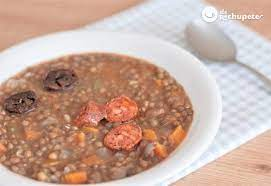

Lentils

Description
Lentils is a stew made with lentils and various type of meat and vegetables.
It is usually made with chorizo, potatoes and green pepper.
Ingredients
- Lentils
- Chorizo
- Potatoes
- Green pepper
Steps
- Wash the lentils under cold water
- Cut the potatoes into bite-sized pieces
- Cook the lentils, chorizo and potatoes in a big pot